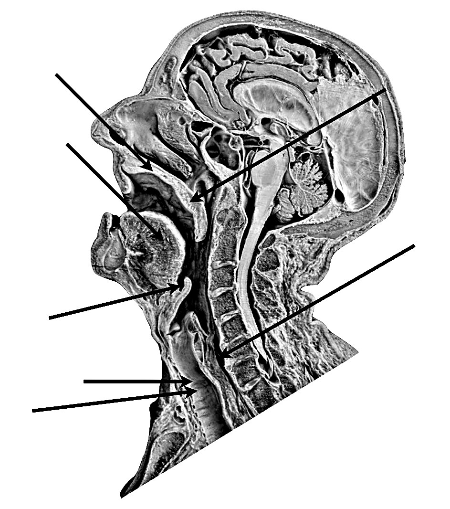

Respiratory System, Part 1

BIO 004 Human Anatomy · Module 4
Respiratory System, Part 1
Lecture slides, built to match the note sheet
Competencies 97 to 99: airway map, nose and pharynx, larynx. Cadaver beside model. Fill in as we go.
A. Nose, pharynx, larynx: the start of the airway (cadaver)B. Palate, tonsils and the three regions of the pharynx (model)C. Larynx, anterior: cadaver beside modelD. Larynx, posterior (model)
Dr. Sharilyn Rennie